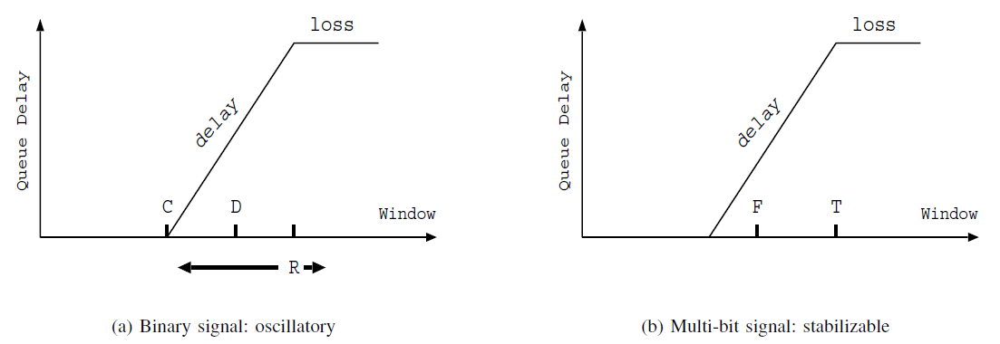
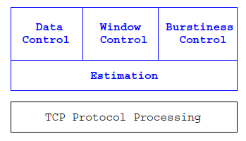

经典的TCP拥塞控制算法TCP Reno从被提出后很长一段时间一直作为Linux kernel的默认算法，但随着Internet在规模、传输速度、负载、连接数上的增长，TCP Reno迟早会成为性能瓶颈。
问题与背景
当前的Linux kernel的默认拥塞控制算法是于2008年提出的CUBIC，本文介绍的FAST TCP算法于2004年被提出，主要针对高速和长延迟网络，虽然有点老，但还是可以了解了解的。原文主要是和TCP Reno作比较，所以提出的问题也是针对TCP Reno的（时代所限制，如果是现在提出的算法多半是要和CUBIC作比较的）。
TCP Reno的问题
TCP Reno在large bandwidth-delay products网络上表现差主要体现在以下四个方面（摘自原文）：
- At the packet level, linear increase by one packet per Pound-Trip Time(RTT) is too slow, and multiplicative decrease per loss event is too drastic.
- At teh flow level, maintaining large average congestion windows requires an extremely small equilibrium loss probability.
- At the packet level, oscillation is unavoidable because TCP uses a binary congestion sigmal(packet loss).
- At the flow level, the dynamics is unstable leading to severe oscillations that can only be reduced by the accurate estimation of packet loss probability and a stable design of the flow dynamics.
在前人的工作中有很多算法是基于丢包检测提出的，比如HSTCP和STCP，而FAST TCP是通过测量queueing delay来作为网络拥塞程度的参考。
flow level和packet level的区别
一个拥塞控制算法可以从两个level(flow level and packet level)去设计。flow level相比于packet level是一个宏观上的概念，其设计目标是达到高带宽利用率、低排队延迟和丢包、公平和稳定。而packet level是通过端到端控制的约束来设计实施那些flow level的目标。
FAST TCP的设计
在说FAST TCP的设计之前先来看一个方程；
$$\check{w}_i(t) = \kappa_i(t)(1 - \frac{p_i(t)}{u_i(t)})\label{eq.Sample}$$
方程（1）可以用来描述各种已知的TCP拥塞控制算法，不同的拥塞控制算法的区别在于它们对gain function$\kappa_i$和marginal utility function$u_i$以及congestion measures $p_i$是丢失率还是排队延迟。
当然啦，FAST TCP与其他的拥塞控制算法的区别也是在那三个函数的选择上。下面对这三个函数的作用简单介绍下（还是摘自原文，翻译真的很麻烦）。
$\kappa_i$: the choice of the gain function $\kappa_i$ determines the dynamic properties sush as stability and responsiveness, but does not affect the equilibrium properties.
$u_i$: the choice of the marginal utility function $u_i$ mainly determines equilibrium properties such as the equilibrium rate allocation and its fairness.
$p_i$: in the absence of explicit feedback, the choice of congestion measure $p_i$ is limited to loss probability or queueing delay. The dynamics of $p_i(t)$ is determined at links.
implementation strategy
FAST TCP 通过适当的flow and packet level 设计来解决上文提到的TCP Reno 在large windows环境下所遇到的四个问题。
首先，评估当前状态$\frac{p_i(t)}{u_i(t)}$距equilibrium（值为1）有多远，如果当前状态接近于equilibrium，那么就缓慢调整window，反之，则激进一点调整。而在TCP Reno中，其窗口调整取决于当前窗口大小。基于delay的方法避免了在TCP Reno中window缓慢增长，迅速下降的问题。
其次，选择一个multi-bit 的拥塞测试，消除由于binary feedback造成的packet level oscillation。这里binary feedback表示window要么增，要么降，没有其他选择。
最后，拥塞测量函数$p_i(t)$采用测量queueing delay而不是测量loss probability，通过调整window从而控制queueing delay可以使网络稳定在overflowing point的下方区域，如下图（b）中的F点。这样既消除了高queueing
delay，又避免了不必要的数据包丢失。更重要的是，这样还保留了root for buffering “mice” traffic。

FAST TCP的架构和算法
在FAST TCP这篇paper中， 将TCP拥塞控制机制分割成了四部分，这四部分功能相互独立，以便能够设计分离和异步升级。如下图所示，FAST TCP的架构。

其中，data control 部分决定发送那些数据包，window contorl部分决定可以发多少数据包，burstiness control决定什么时候发送这些数据包，上述决定都是在estimation部分提供的信息的基础上做出的。这里只说一下estimation和window control。
Estimation
对于每一个被发送的数据包，estimation部分计算两类反馈信息。当收到一个正常的ACK，计算出相应数据包的RTT，更新平均queueing delay和最小RTT。当收到一个乱序ACK（三个dupack或者timeout），estimation会将数据包的丢失信息报告给其他部分。estimation既可以进行multi-bit的queueing delay采样，也可以进行ont-bit的loss-or-no-loss采样。
最后得到的RTT一般都会采用加权移动平均处理，FAST TCP也不例外，$T_i(k)$表示第k个RTT的样本值，$\overline{T}_i(k)$，平均RTT的更新公式如下：
$$\overline{T}_i(k+1) = (1 - \eta)\overline{T}_i(k) + \etaT_i(k)$$
这里，$t_k$表示收到第k个RTT样本值的时间，$\eta$为加权值。记$d_i(k)$为到目前为止的最小RTT，那么平均queueing delay的计算公式如下：
$$\hat{q}_i(k) = \overline{T}_i(k) - d_i(k)$$
Window control
window control会根据estimation提供的拥塞信息（queueing delay and packet loss）来决定拥塞窗口的调整。FAST TCP不同于传统TCP的关键在于其对拥塞窗口的计算与sender state是独立的。
在正常情况下，根据estimation提供的平均RTT和平均queueing delay，FAST TCP会周期性的更新其拥塞窗口$CWnd$。 更新公式如下：
$$w <— min\lbrace2w, (1-\gamma)w + \gamma(\frac{baseRTT}{RTT}w + \alpha(w, qdelay))\rbrace$$
这里，$\gamma\in(0, ]$，qdelay是端到端的平均queueing delay。
这篇博客只是对原文基本思想的表述，还有许多细节问题没有提到，有兴趣的朋友可以考虑看看原文，原文地址在博客的参考文献中给出。
参考文献
FAST TCP: Motivation, Architecture, Algorithms, Performance